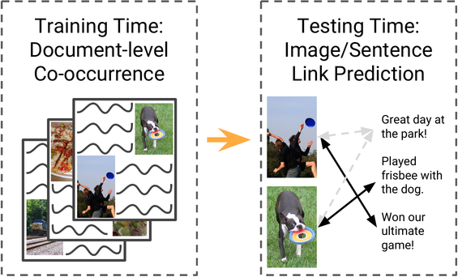
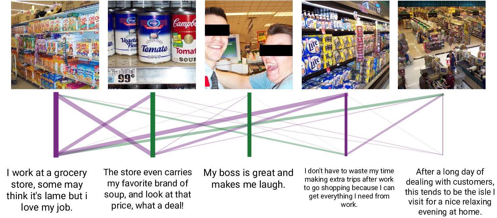
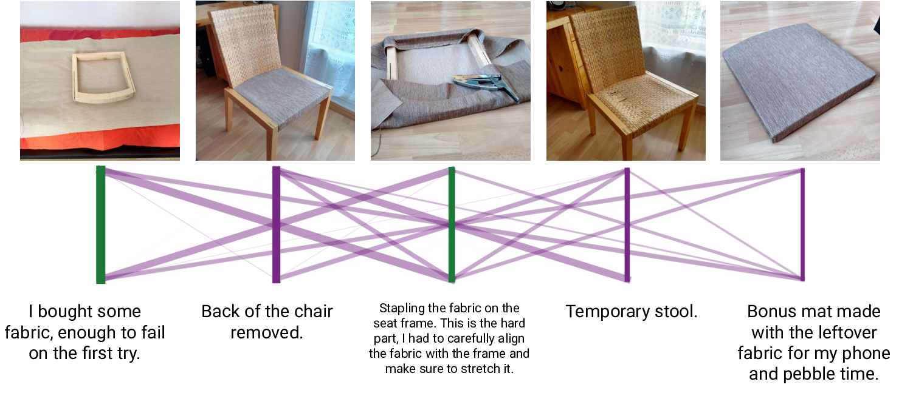

## Unsupervised Discovery of Multimodal Links in Multi-image, Multi-sentence Documents
[Jack Hessel](https://www.cs.cornell.edu/~jhessel), [Lillian Lee](https://www.cs.cornell.edu/home/llee/), [David Mimno](https://mimno.infosci.cornell.edu)
EMNLP 2019 ([paper, including supplementary material](https://arxiv.org/abs/1904.07826))
---
<p style="text-align: center;">

</p>
<p style="text-align: center;">
*At training time, we assume access to a set of documents consisting of sentences and images. At test time, we aim to predict links between individual images/sentences within documents, a target not available at training time.*
</p>
---
### Abstract
Images and text co-occur constantly on the web, but explicit links
between images and sentences (or other intra-document textual units)
are often not present. We present algorithms that discover
image-sentence relationships without relying on explicit multimodal
annotation in training. We experiment on seven datasets of varying
difficulty, ranging from documents consisting of groups of images
captioned post hoc by crowdworkers to naturally-occurring
user-generated multimodal documents. We find that a structured
training objective based on identifying whether collections of images
and sentences co-occur in documents can suffice to predict links
between specific sentences and specific images within the same
document at test time.
### Dataset and code
All seven datasets used in our study, along with the source code for
training your own multi-sentence/image retrieval models, [is available
on our github page.](https://github.com/jmhessel/multi-retrieval)
### Example predictions
<p style="text-align: center;">

</p>
<p style="text-align: center;">
*Example of our predictions on [Huang et al. 2016's visual storytelling dataset.](http://visionandlanguage.net/VIST/)*
</p>
For more difficult datasets like Story-SIS, the algorithm struggles
with ambiguity in making same-document predictions. For 2/5 sentences
that refer to literal objects/actions (soup cans/laughter), the
algorithm works well. The remaining 3 captions are general musings
about working at a grocery store that could be matched to any of the
three remaining images depicting grocery store aisles.
<p style="text-align: center;">

</p>
<p style="text-align: center;">
*Example of our predictions on the reddit "do it yourself" (DIY) dataset we assemble and release*
</p>
We assemble and release a dataset of home improvement images/captions
[derived from reddit's do it yourself (DIY)
community](https://www.reddit.com/r/DIY/). DIY is a difficult dataset
to make predictions between individual images/sentences, as many could
reasonably be assigned to each other
### Citation
If you find our paper, datasets, or code useful, please conisder citing our work!
```
@inproceedings{hessel-lee-mimno-2019unsupervised,
title={Unsupervised Discovery of Multimodal Links in Multi-Image, Multi-Sentence Documents},
author={Hessel, Jack and Lee, Lillian and Mimno, David},
booktitle={EMNLP},
year={2019}
}
```
### Questions, comments, thoughts?
We'd love to hear from you! Don't hesitate to contact us!! :-)